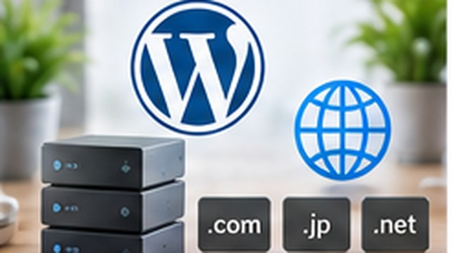

WordPress開設後に最初にやることまとめ
WordPress開設後に最初にやることまとめについて、初心者向けに具体的な手順・例・注意点を交えて解説します。

結論
WordPressをインストールしたら、いきなり記事を量産する前に、URL・サイト基本情報・パーマリンク・更新とバックアップを確認します。
後から変更すると手間が大きい項目を先に見るのがポイントです。
1. HTTPSでサイトが開くか確認する
ブラウザで、
https://あなたのドメイン/を開きます。
WordPress管理画面の 「設定」→「一般」 では、WordPressアドレスとサイトアドレスも確認できます。意味が分からない状態でURLを変更するとログインできなくなることがあるため、むやみに書き換えません。
2. サイト名・管理メールを確認する
「設定」→「一般」 でサイトのタイトル、管理者メールアドレス、サイト言語、タイムゾーンなどを確認します。
日本向けサイトなら、タイムゾーンが意図した設定になっているかも見ます。
3. パーマリンクを決める
「設定」→「パーマリンク」 で記事URLの形式を確認します。
公開記事が大量に増えてからURL構造を変更すると、既存リンクや検索結果への対応が必要になります。運営開始前に方針を決める方が楽です。
4. 不要な初期コンテンツを確認する
初期投稿や固定ページ、不要なプラグインなどがあれば内容を確認し、使わないものは整理します。
ただし、用途が分からないプラグインを機械的に全部削除するのではなく、サーバー会社が提供している機能かも確認します。
5. テーマを決める
無料・有料どちらでも構いません。スマホ表示、更新状況、必要なデザイン機能などを見ます。
テーマを選ぶ前に記事を大量に細かく装飾すると、テーマ変更時に修正が増える場合があります。
6. 必要なプラグインだけ追加する
バックアップ、問い合わせ、SEO補助など、サイトの目的に必要なものを選びます。
同じ役割のプラグインを複数入れると競合することがあるため、「おすすめ10選」を全部入れる必要はありません。
7. バックアップ方法を確認する
サーバー側の自動バックアップがあるなら、保存期間と復元方法まで確認します。
「バックアップされている」と「自分で戻せる」は別です。
8. テスト記事を1本公開する
見出し、画像、リンク、スマホ表示を確認します。
問題なければ、Search Consoleやアクセス解析など公開後の設定へ進みます。
Webサイトを公開したら何をする？SEO・アクセス解析・サイト改善まとめ
最初の設定は「おすすめ設定を全部入れる」より、後から変えると困るものを先に決め、必要な機能だけ足す方が管理しやすくなります。
開設後の運用を安定させるには、契約中のレンタルサーバーでバックアップやセキュリティ機能も確認しておきます。
親記事
WordPressの始め方｜初心者向けに開設までの流れを解説

企業の情報システム・DX推進・マーケティング業務などを経験。PC・Webサービス・業務自動化など、実際に試して分かったことを初心者向けに解説しています。
運営者情報を見る →